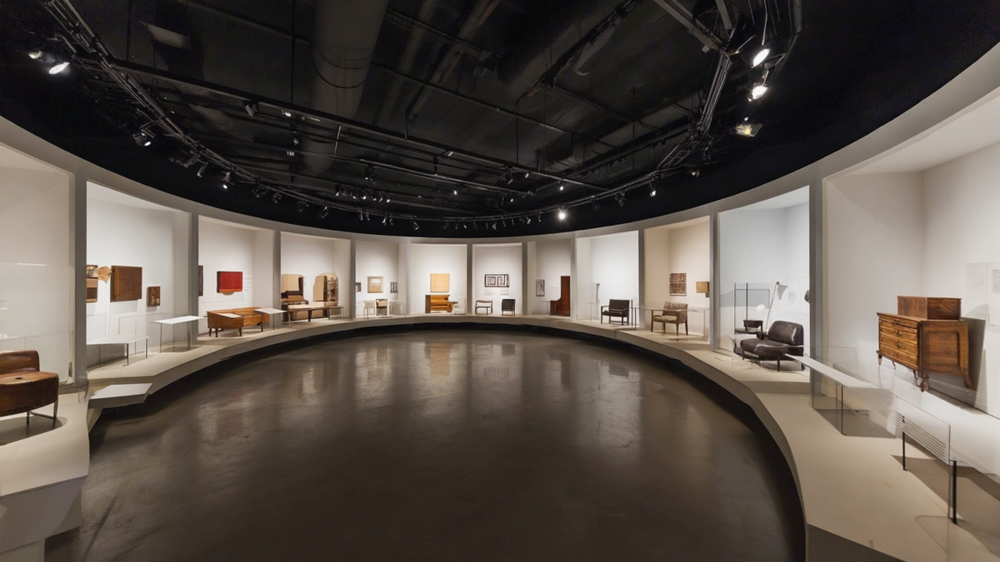
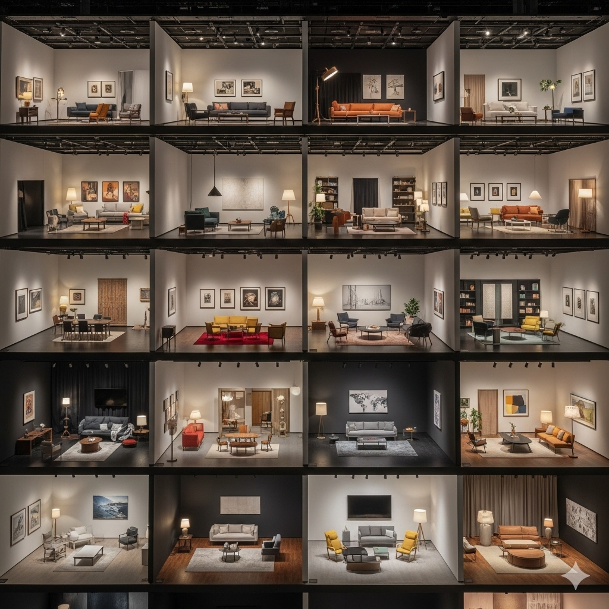
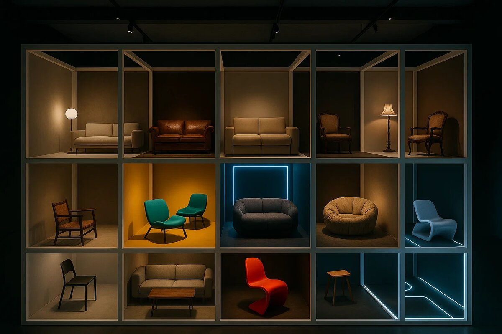

Самое тяжёлое в моей работе консультанта мебельных компаний — донести простую вещь: в мебели, которую вы создаёте и продаёте, должна быть философия.Философия и ценности должны быть встроены во всё:
- в ассортимент (структура, ширина и глубина),
- в цвета и формы,
- в фотографии и описания,
- инструкции по сборке,
- ...
Без философии мебель - это просто доски и фурнитура, а с философией - это смысл, знак, обещание, история, которую клиент покупает вместе с вещью.
Я собрал 17 философов, у каждого из которых можно позаимствовать основу для вашего УТП. Выберите, что вам ближе всего, или скомпилируйте и получите не просто философию вашей мебели, а смысл вашего бизнеса и УТП вашего продукта.

1. Ролан Барт: мебель как текст
Смысл: мебель = история.
Что продаём: не диван, а миф о доме.
Что покупают: ощущение, что их жизнь «читается» красиво.
Примеры товаров:
- Диван для долгих вечерних разговоров с друзьями.
- Обеденный стол, вокруг которого собирается семья каждое воскресенье.
- Стеллаж, где каждая полка «рассказывает» о взрослении ребёнка.
2. Жан Бодрийяр: мебель как символ
Смысл: вещи = знаки.
Что продаём: символ статуса или роли.
Что покупают: не функцию, а знак «кто я».
Примеры товаров:
- Кресло для кабинета, которое демонстрирует власть и успех.
- Рабочий стол в стиле «лофт» - символ свободы удалёнки.
- Детский стеллаж «Монтессори» как символ «я - ответственный родитель».
3. Георг Зиммель: мебель как мода
Смысл: мода = «как все, но чуть иначе».
Что продаём: чувство принадлежности + изюминку.
Что покупают: уверенность «я в тренде».
Примеры товаров:
- Базовый белый шкаф с необычными ручками.
- Классический диван, но в новом цвете сезона.
- Стул привычной формы, но с неожиданной отделкой.
4. Пьер Бурдьё: мебель как маркер класса
Смысл: вкус = социальный капитал.
Что продаём: принадлежность к кругу.
Что покупают: «правильный» стиль, подтверждающий статус.
Примеры товаров:
- Стол из массива дуба для просторной гостиной «как у успешных».
- Кресло с кожаной отделкой премиум-сегмента.
- Буфет в классическом стиле для «аристократичного» интерьера.
5. Жиль Делёз (и Ф. Гваттари): мебель как запутанная сеть
Смысл: жизнь = ризома, не иерархия.
Что продаём: свободу собирать пространство самому.
Что покупают: гибкость и возможность менять.
Примеры товаров:
- Модульный диван, который можно расширять или перестраивать.
- Система стеллажей, где каждый блок добавляется в любом направлении.
- Комод, к которому можно докупить новые секции.
6. Мишель Фуко: мебель как дисциплина
Смысл: мебель управляет поведением.
Что продаём: порядок и контроль.
Что покупают: дисциплину для себя и семьи.
Примеры товаров:
- Школьная парта, которая приучает ребёнка к самостоятельности.
- Переговорный стол, задающий равенство позиций.
- Рабочее место с перегородкой для концентрации.
7. Гастон Башляр: мебель как архетип
Смысл: дом = символы (гнездо, угол, чердак).
Что продаём: уют и воображение.
Что покупают: чувство защищённости.
Примеры товаров:
- Кресло-кокон, в котором можно спрятаться.
- Кровать «гнездо» для двоих.
- Маленькая книжная полка, создающая «свой угол».
8. Вальтер Беньямин: мебель как аура прошлого
Смысл: прошлое оживает в вещах.
Что продаём: связь времён.
Что покупают: ностальгию, ощущение «корней».
Примеры товаров:
- Винтажный шкаф в стиле 70-х.
- Кресло-качалка «как у бабушки».
- Ретро-комод с потёртой отделкой.
9. Зигмунт Бауман — мебель как гибкость
Смысл: современность текучая.
Что продаём: лёгкость и мобильность.
Что покупают: мебель, которая «переезжает» вместе с ними.
Примеры товаров:
- Складной стол для маленькой квартиры.
- Разборная кровать для арендного жилья.
- Лёгкий пластиковый стул для дачи и дома.
10. Бруно Латур: мебель как актор сети
Смысл: вещи действуют вместе с людьми.
Что продаём: экосистему, а не предмет.
Что покупают: ощущение целостности.
Примеры товаров:
- Шкаф с аксессуарами, где всё интегрировано (ящики, полки, подсветка).
- Обеденный стол с набором стульев, идеально подогнанных.
- Система хранения с модульными корзинами и органайзерами.
11. Ричард Сеннетт: мебель как ремесло
Смысл: ценность = труд и материал.
Что продаём: историю мастерства.
Что покупают: «честную вещь с душой».
Примеры товаров:
- Стол из массива дуба, отполированный вручную.
- Кровать, собранная по старинным столярным приёмам.
- Буфет с уникальными резными элементами.
12. Ханна Арендт: мебель для разных режимов жизни
Смысл: мебель для труда, работы, действия.
Что продаём: сцену для разных форм жизни.
Что покупают: мебель, соответствующую их роли.
Примеры товаров:
- Рабочий стол для каждодневных задач.
- Большая кухня для творческого процесса готовки.
- Стол для вечеринок и обсуждений.
13. Сара Торнтон: мебель как сцена сообщества
Смысл: вещи = часть культурных сообществ.
Что продаём: мебель + участие в сообществе.
Что покупают: быть «внутри клуба».
Примеры товаров:
- Диван, разработанный в коллаборации с молодыми художниками.
- Стол «галерея», который появляется в подборках интерьеров.
- Кресло-арт-объект ограниченного выпуска.
14. Клод Леви-Стросс: мебель как ритуал
Смысл: вещи встроены в мифы и семейные традиции.
Что продаём: предметы ритуала.
Что покупают: возможность закрепить привычки.
Примеры товаров:
- Большой обеденный стол для семейных ужинов.
- Кресло для вечернего чтения сказок детям.
- Комод для хранения семейных реликвий.
15. Умберто Эко: мебель как открытое произведение
Смысл: текст (и вещь) открыт для интерпретаций.
Что продаём: свободу достраивать и менять.
Что покупают: участие в дизайне.
Примеры товаров:
- Модульный диван, который можно собирать под себя.
- Полка, которую можно компоновать по-разному.
- Система хранения с элементами для самостоятельной сборки.
16. Жиль Липовецки: мебель как вечное обновление
Смысл: культура ускоряется, всё быстро устаревает.
Что продаём: актуальность и свежесть.
Что покупают: уверенность, что они «в теме».
Примеры товаров:
- Кресло в цвете года по версии Pantone.
- Лимитированная серия стульев под тренд «эко-лайфстайл».
- Сезонные декор-комоды, выпускаемые каждые полгода.
17. Борис Гройс: мебель как «новое»
Смысл: новое = то, что признано новым.
Что продаём: ощущение «нового поколения дизайна».
Что покупают: чувство новизны, даже если форма старая.
Примеры товаров:
- Советский стул в новом материале (например, пластик вместо фанеры).
- Классический комод, переосмысленный в современном стиле.
- Диван «ретро-модерн» с новой тканью.
Резюме
Каждая философия = ценность (ваша ценность, ценность вашей продукции). Ваша задача - выбрать или скомбинировать философию вашей мебели и встроить её во всё: от ассортимента до текста карточки.
Это и будет вашим реальным УТП.
P.S.
Например: IKEA = Делёз + Эко + Башляр
- Делёз → модульность и сеть.
- Эко → открытость, клиент как соавтор.
- Башляр → архетипы уюта и дома.
